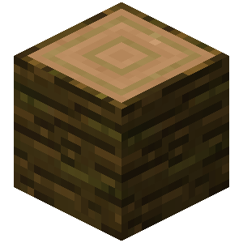
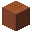

tablones.
tablones.
El tronco es uno de los materiales más importantes de Minecraft y surge de los árboles. Con él, obtenemos tablones.
Se consiguen talando los arboles de la  jungla.
jungla.
Se puede obtener una  hacha de cualquier material.
hacha de cualquier material.
Hacha de cualquier material